报表
Reports in Koha are a way to gather data. Reports are used to generate statistics, member lists, shelving lists, or any list of data in your database.
- Get there: More > Reports
Custom reports
Koha’s data is stored in a MySQL database which means that librarians can generate nearly any report they would like by either using the guided reports wizard or writing their own SQL query.
Add custom report
Guided report wizard
The guided report wizard will walk you through a six step process to generate a report.
Step 1: Choose the module you want to report on. This will determine what tables and fields are available for you to query.
‘Report is public’ should be left to the default of ‘No’ in most cases especially if the report contains patron or other sensitive information. A public report can be accessed using the JSON reports services by anyone and without authentication.
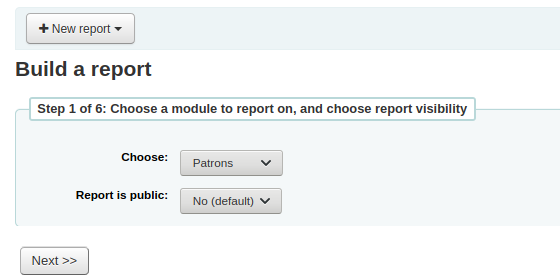
Note
If your system administrator has set up memcache on your server you might see one more option for the Cache expiry. This is related to your public reports. If you make the report public then it’s constantly running and will cause a large load on your system. Setting this value prevents that.
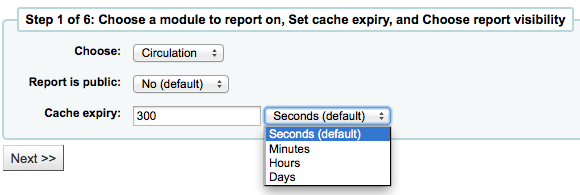
Step 2: Choose a report type. For now, Tabular is the only option available.
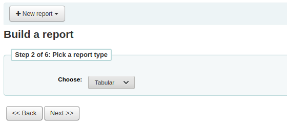
Step 3: Choose the fields you want in your report. You can select multiple fields and add them all at once by using CTRL+click on each item you want to add before clicking the Add button.
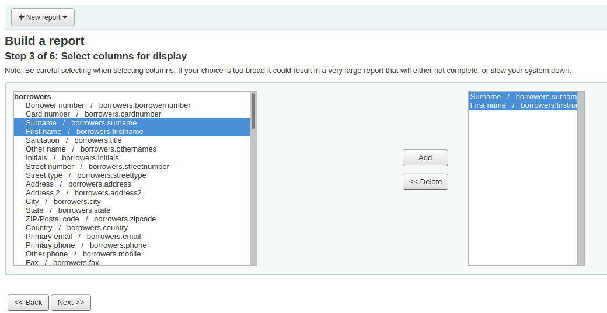
Step 4: Choose any limits you might want to apply to your report (such as item types or branches). If you don’t want to apply any limits, simply click ‘Next’ instead of choosing an option.
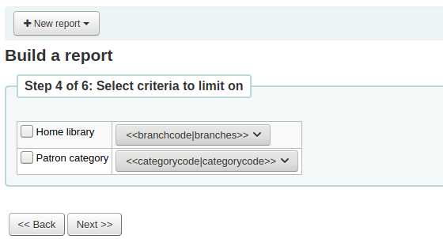
Step 5: Perform math functions. If you don’t want to do any calculations, simply click ‘Next’ instead of choosing an option.
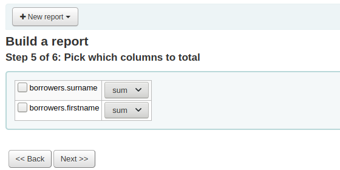
Step 6: Choose data order. If you want the data to print out in the order it’s found in the database, simply click ‘Finish’.
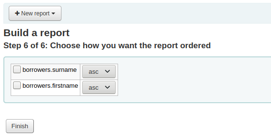
When you are finished you will be presented with the SQL generated by the report wizard. From here you can choose to save the report by clicking ‘Finish’ or copy the SQL and make edits to it by hand.
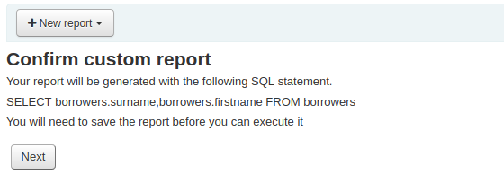
If you choose to save the report you will be asked to name your report, sort it in to groups and subgroups and enter any notes regarding it.
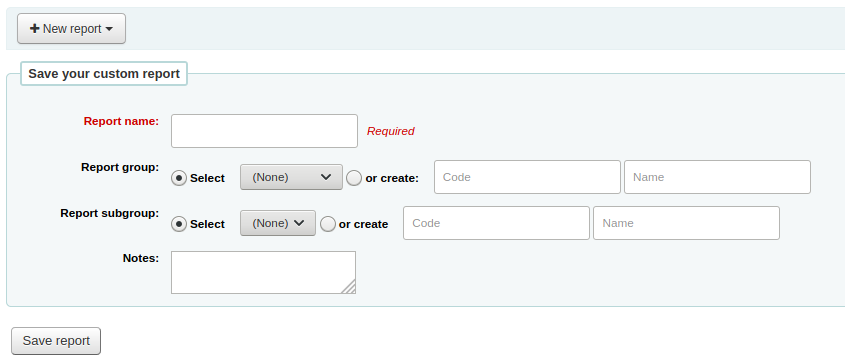
Once your report is saved it will appear on the ‘Use saved’ page with all other saved reports.
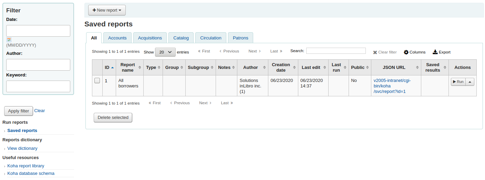
Note
- You can customize the columns of this table in the ‘Table settings’ section of the Administration module (table id: table_reports).
From here you can make edits, run the report, or schedule a time to have the report run. To find the report you created you can sort by any of the columns by clicking the on the column header (creation date is the best bet for finding the report you just added). You can also filter your results using the filter menu on the left or use the tabs to find reports based on your custom groups.
Report from SQL
In addition to the report wizard, you have the option to write your own queries using SQL. To find reports written by other Koha users, visit the Koha wiki: http://wiki.koha-community.org/wiki/SQL_Reports_Library. You can also find your database structure in /installer/data/mysql/kohastructure.sql or online at: http://schema.koha-community.org.
To add your query, click the link to ‘Create from SQL’ on the main reports module or the ‘New report’ button at the top of the ‘Saved reports’ page.
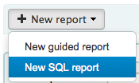
Fill in the form presented
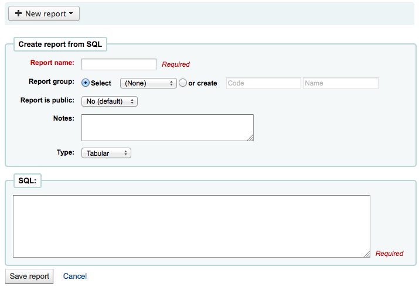
The ‘Name’ is what will appear on the Saved Reports page to help you identify the report later. It will also be searchable using the filters found the left of the Saved Reports page.
You can use the ‘Report group’ to organize your reports so that you can easily filter reports by groups. Report groups are set in the REPORT_GROUP authorized value category or can be added on the fly when creating the report by choosing the ‘or create’ radio button.
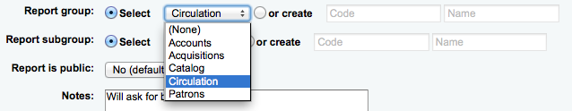
Report groups set up in the authorised value category need to have unique authorised values and descriptions.
Note
If you’re adding a report group on the fly, remember that you code should be fewer than 10 characters and should not include special characters or spaces.
You can use ‘Report subgroup’ to further organize your reports so that you can easily filter reports by groups and subgroups. Report subgroups are set in the REPORT_SUBGROUP authorized value category or can be added on the fly when creating the report by choosing the ‘or create’ radio button. Report subgroups are set up with unique values in ‘Authorised value’, and ‘Description’. The ‘Description (OPAC)’’ field needs to contain the authorised value for the report group that the subgroup falls under.
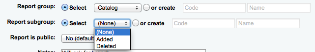
Note
If you’re adding a report subgroup on the fly, remember that you code should be fewer than 10 characters and should not include special characters or spaces.
- ‘Report is public’ should be left to the default of ‘No’ in most cases
especially if the report contains patron or other sensitive information. A public report can be accessed using the JSON reports services by anyone and without authentication.
‘Notes’ will also appear on the saved reports page, this can be used to provide more details about the report or tips on how to enter values when it runs
The type should always be ‘Tabular’ at this time since the other formats have not been implemented
In the ‘SQL’ box you will type or paste the SQL for the report
Note
If your system administrator has set up memcache on your server you might see one more option for the Cache expiry. This is related to your public reports. If you make the report public then it’s constantly running and will cause a large load on your system. Setting this value prevents that.
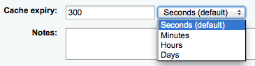
Once everything is entered click the ‘Save report’ button and you’ll be presented with options to run it. Once a report is saved you do not have to recreate it you can simply find it on the Saved Reports page and run or edit it.
Report writing tips
Runtime parameters
If you feel that your report might be too resource intensive you might want to consider using runtime parameters to your query. Runtime parameters basically make a filter appear before the report is run to save your system resources.
There is a specific syntax that Koha will understand as ‘ask for values when running the report’. The syntax is <<Question to ask|authorized_value>>.
- The << and >> are just delimiters. You must put << at the beginning and >> at the end of your parameter
- The ‘Question to ask’ will be displayed on the left of the string to enter.
- The authorized_value can be omitted if not applicable. If it contains an authorized value category, ‘branches’, ‘itemtype’, ‘categorycode’, ‘biblio_framework’, a list with the Koha authorized values will be displayed instead of a free field.
注解
You can have more than one parameter in a given SQL query.
注解
You have to put “%” in a text box to ‘leave it blank’. Otherwise, it literally looks for “” (empty string) as the value for the field.
For example entering nothing for: “title=<<Enter title>>” will display results with title=’’ (no title).
If you want to have to have something not mandatory, use “title like <<Enter title>>” and enter a % at run time instead of nothing.
List of parameters that can be used in runtime parameters
| Parameter | What the user sees | What gets inserted in query |
|---|---|---|
| date | date picker | validly formatted date |
| branches | drop down of branch names | branch code |
| itemtypes | drop down of item type names | item type |
| categorycode | drop down of patron category descriptions | borrower category code |
| biblio_framework | drop down of MARC bibliographic frameworks | framework code |
| list | large text box | comma separated values |
| (auth-value-category) | drop down of auth-value descriptions in category | authorized value |
| (nothing) | text box | entered text |
Example 1
SELECT surname,
firstname
FROM borrowers
WHERE branchcode = <<Enter patrons library|branches>>
AND surname LIKE <<Enter filter for patron surname (% if none)>>
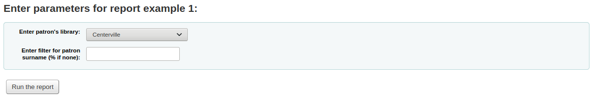
Example 2
SELECT *
FROM items
WHERE homebranch = <<Pick your branch|branches>>
AND barcode LIKE <<Partial barcode value here>>
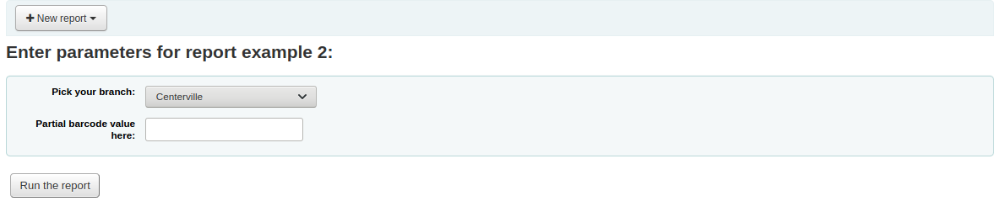
Example 3
SELECT title,
author
FROM biblio
WHERE frameworkcode = <<Enter the frameworkcode|biblio_framework>>
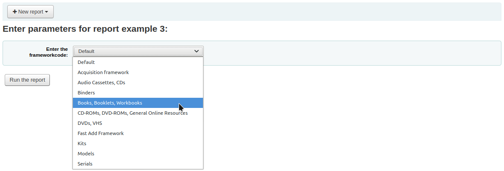
Example 4
SELECT cardnumber,
surname,
firstname
FROM borrowers
WHERE dateexpiry <= <<Expiry date|date>>
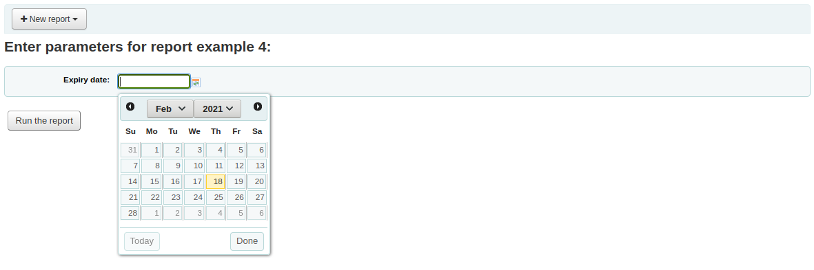
Example 5
SELECT *
FROM items
WHERE itemnumber IN <<List of itemnumbers (one per line)|list>>
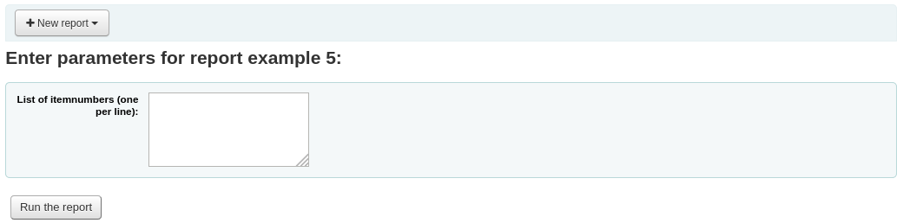
警告
In the case of the list parameter, users must write one value per line.
SQL report from Mana
In the “Create report from SQL”, you can search Mana KB for pre-made reports by clicking on “New report” and choosing “New SQL from Mana”.
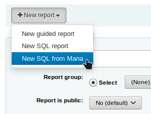
Note
This option will only appear if you’ve configured Mana KB in the administration module.
You will be prompted to enter keywords to search the knowledge base.
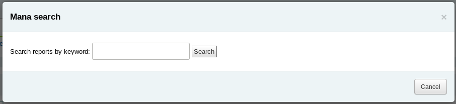
In the search results, you will see
- the details of the report (name, notes and type)
- how many people have used this entry (# of users)
- when it was used for the last time (last import)
- additional comments made by other Koha users (comments)
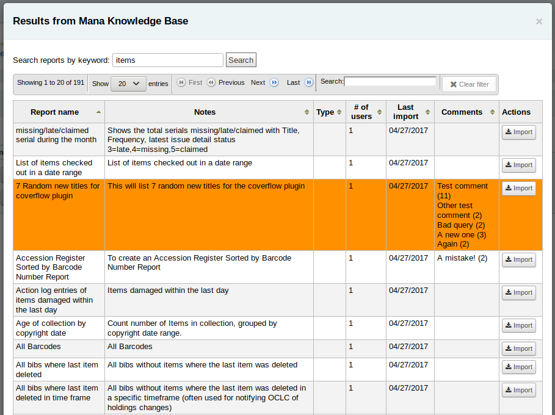
Click on “Import” to import a copy of the report in your own saved reports.
You can then edit it, duplicate it, delete it, run it as you would any of your own reports.
Duplicate report
Reports can also be added by duplicating an existing report. Visit the ‘Saved reports’ page to see all of the reports listed on your system already.
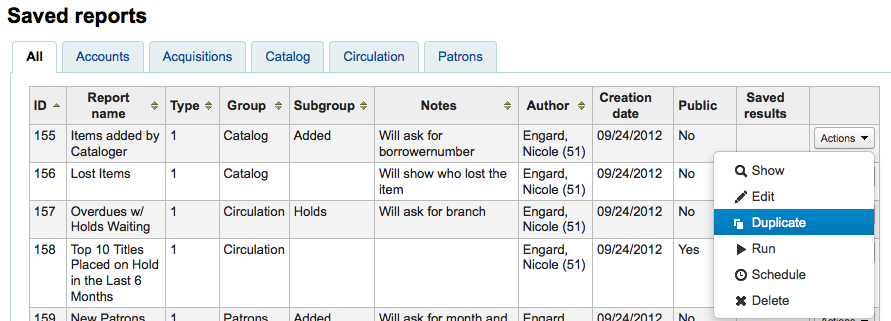
To the right of every report there is an ‘Actions’ pull down. Clicking that and choose ‘Duplicate’ to use an existing report as the basis for your new report. That will populate the new report form with the existing SQL for easy editing and resaving.
Edit custom reports
Every report can be edited from the reports lists. To see the list of reports already stored in Koha, click ‘Use saved.’
Note
- You can customize the columns of this table in the ‘Table settings’ section of the Administration module (table id: table_reports).
To find the report you’d like to edit you can sort by any of the columns by clicking the on the column header. You can also filter your results using the filter menu on the left or use the tabs to find reports based on your custom groups.
From this list you can edit any custom report by clicking ‘Actions’ to the right of the report and choosing ‘Edit’ from the menu that appears.
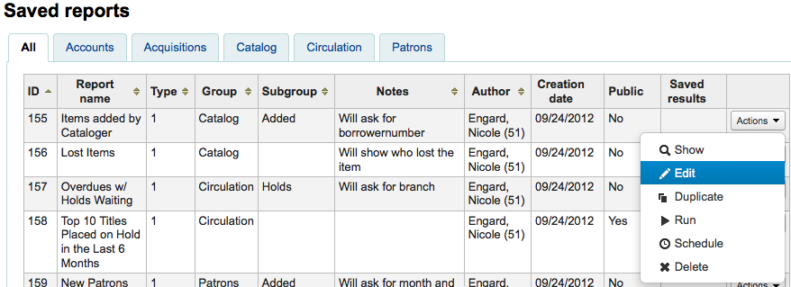
The form to edit the report will appear.
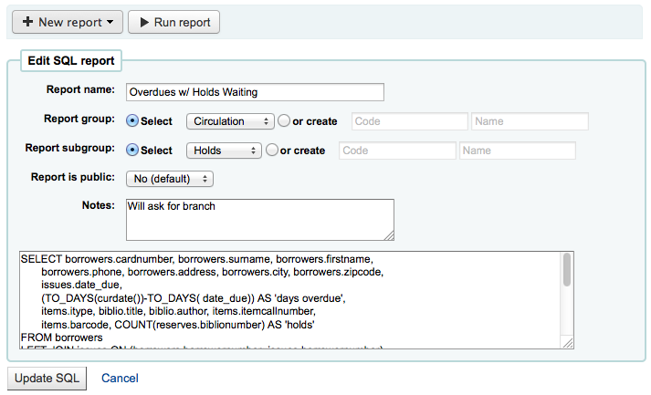
Running custom reports
Once custom reports are saved to Koha, you can run them by going to the Saved Reports page and clicking the ‘Actions’ button to the right of the report and choosing ‘Run’.
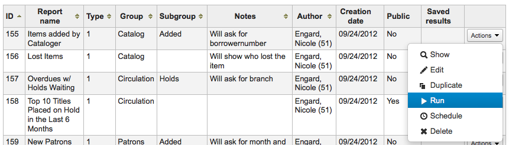
When you report runs you will either be asked for some values
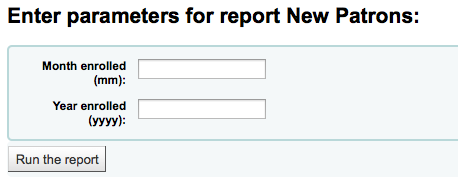
or you will see the results right away
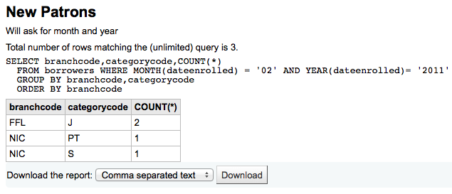
From the results you can choose to rerun the report by clicking ‘Run report’ at the top, edit the report by clicking the ‘Edit’ button or starting over and creating a new report by using the ‘New’ button. You can also download your results by choosing a file type at the bottom of the results next to the ‘Download the report’ label and clicking ‘Download.’
Note
A comma separated text file is a CSV file and it can be opened by any spreadsheet application.
Send report output to batch modification tools
After running a report that contains itemnumbers, biblionumbers and/or patron cardnumbers the list of numbers can be imported directly into the relevant batch modification tool by clicking the ‘Batch operations with X visible records’ button in the report results. The X depends on the number of records you have chosen to display on screen (up to 1000).
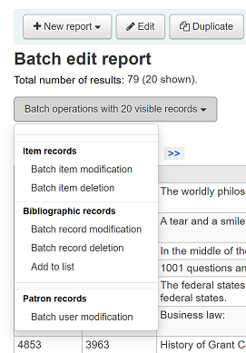
Statistics reports
Statistic reports will show you counts and sums. These reports are all about numbers and statistics, for reports that return more detailed data, use the Guided report wizard. These reports are limited in what data they can look at, so it’s often recommended to use custom reports for official end of the year statistics.
Acquisitions statistics
Note
These reports are limited in what data they can look at, so it’s often recommended to use custom reports for official end of the year statistics.
Using the form provided, choose which value you would like to appear in the column and which will appear in the row.
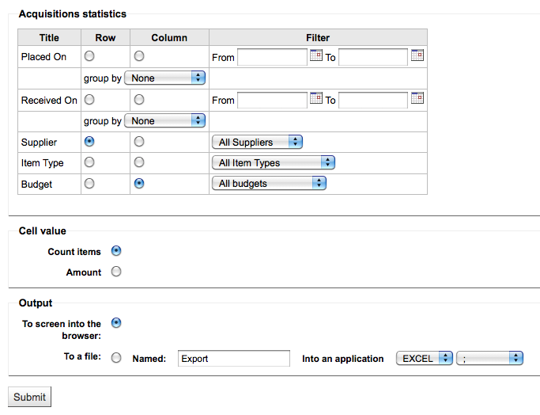
If you choose to output to the browser your results will print to the screen.
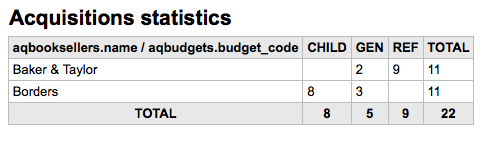
You can also choose to export to a file that you can manipulate to your needs.
When generating your report, note that you get to choose between counting or summing the values.
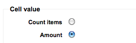
Choosing amount will change your results to appear as the sum of the amounts spent.
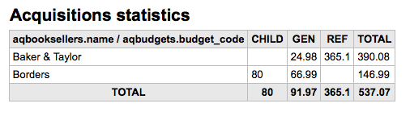
Patron statistics
Note
These reports are limited in what data they can look at, so it’s often recommended to use custom reports for official end of the year statistics.
Using the form provided, choose which value you would like to appear in the column and which will appear in the row.
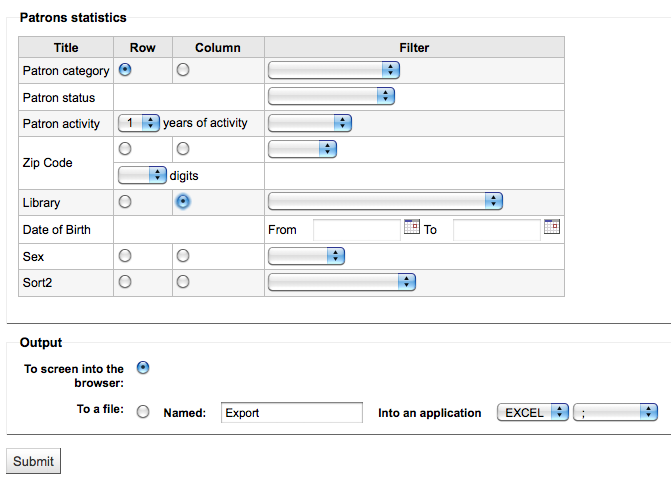
If you choose to output to the browser your results will print to the screen.
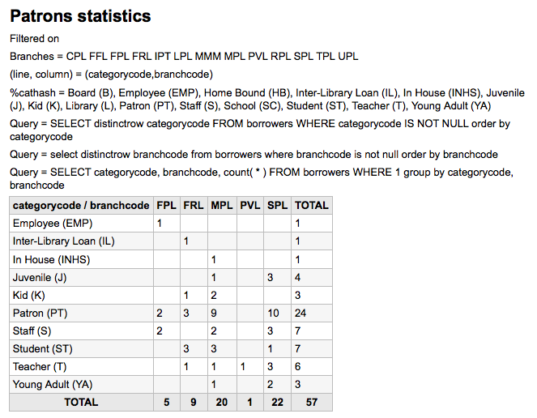
Based on your selections, you may see some query information above your results table. You can also choose to export to a file that you can manipulate to your needs.
Catalog statistics
Note
These reports are limited in what data they can look at, so it’s often recommended to use custom reports for official end of the year statistics.
Using the form provided, choose which value you would like to appear in the column and which will appear in the row.
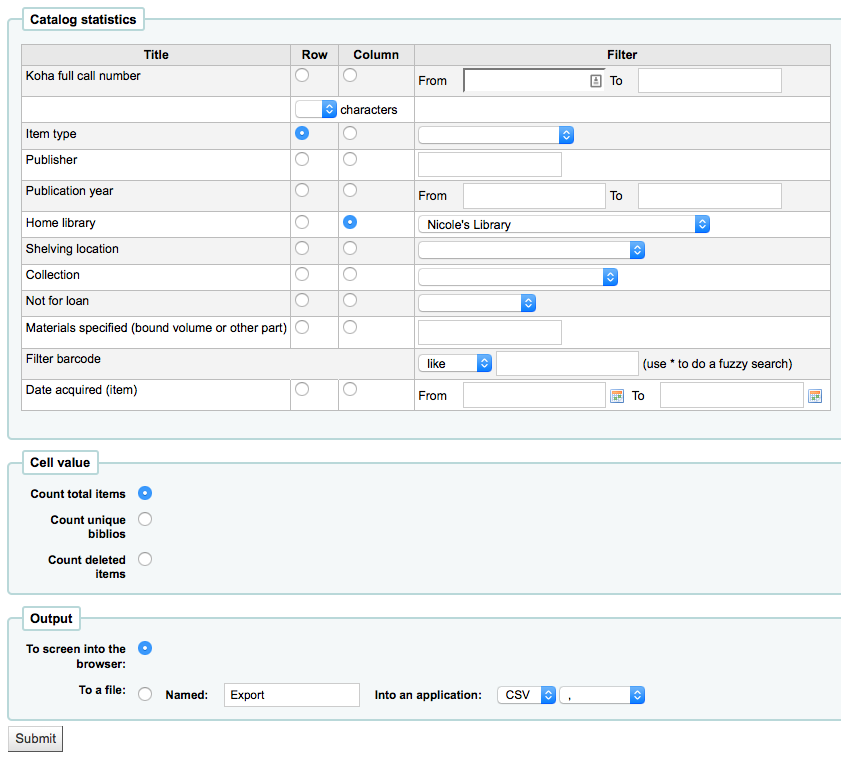
If you choose to output to the browser your results will print to the screen.
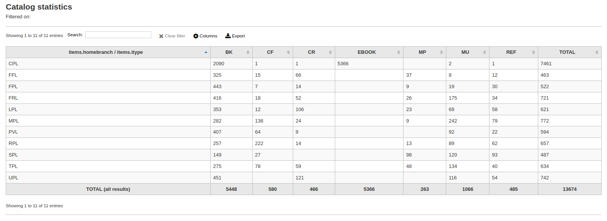
You can also choose to export to a file that you can manipulate to your needs.
Circulation statistics
Note
These reports are limited in what data they can look at, so it’s often recommended to use custom reports for official end of the year statistics.
Using the form provided, choose which value you would like to appear in the column and which will appear in the row.
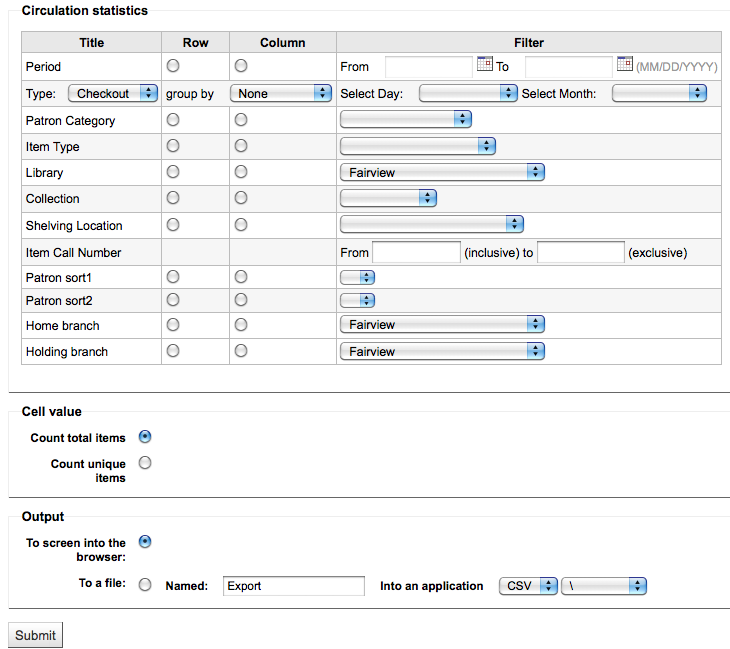
If you choose to output to the browser your results will print to the screen.
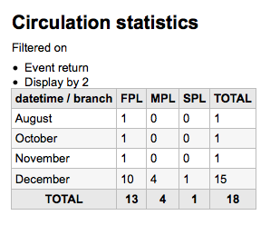
You can also choose to export to a file that you can manipulate to your needs.
Note
To get a complete picture of your monthly or daily circulation, you can run the report twice, once for ‘Type’ of ‘Checkout’ and again for ‘Renewal.’
This report uses ‘Period,’ or date, filtering that allows you to limit to a month by simply selecting the first day of the first month through the first day of the next month. For example, 10/1 to 11/1 to find statistics for the month of October.
- To find daily statistics, set your date range.</br> Example: “I want circulation data starting with date XXX up to, but not including, date XXX.”
- For a whole month, an example range would be: 11/01/2009 to 12/01/2009
- For a whole year, an example range would be: 01/01/2009 to 01/01/2010
- For a single day, an example would be: 11/15/2009 to 11/16/2009 to find what circulated on the 15th
Tracking in house use
Using the Circulation statistics reporting wizard you can run reports on in house usage of items simply by choosing ‘Local use’ from the ‘Type’ pull down:
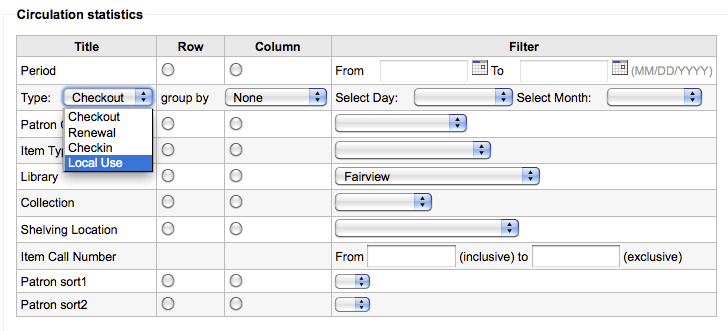
Serials statistics
Note
These reports are limited in what data they can look at, so it’s often recommended to use custom reports for official end of the year statistics.
Using the form provided, choose how you would like to list the serials in your system.
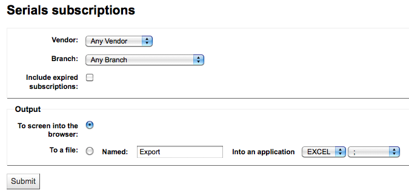
If you choose to output to the browser your results will print to the screen.
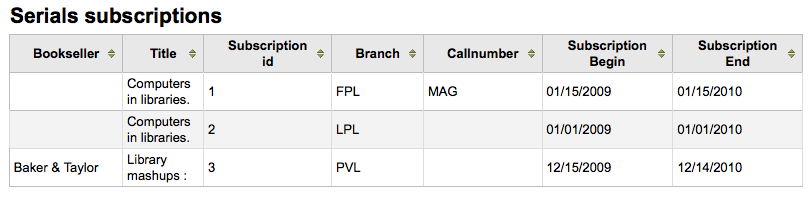
You can also choose to export to a file that you can manipulate to your needs.
Holds statistics
Note
These reports are limited in what data they can look at, so it’s often recommended to use custom reports for official end of the year statistics.
Using the form provided you can see statistics for holds placed, filled, cancelled and more at your library. From the form choose what value you want to display in the column and what value to show in the row. You can also choose from the filters on the far right of the form.
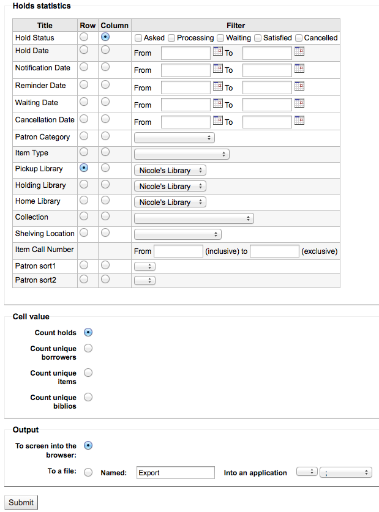
If you choose to output to the browser your results will print to the screen.
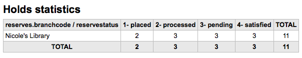
You can also choose to export to a file that you can manipulate to your needs.
Patrons with the most checkouts
This report will simply list the patrons who have the most checkouts.
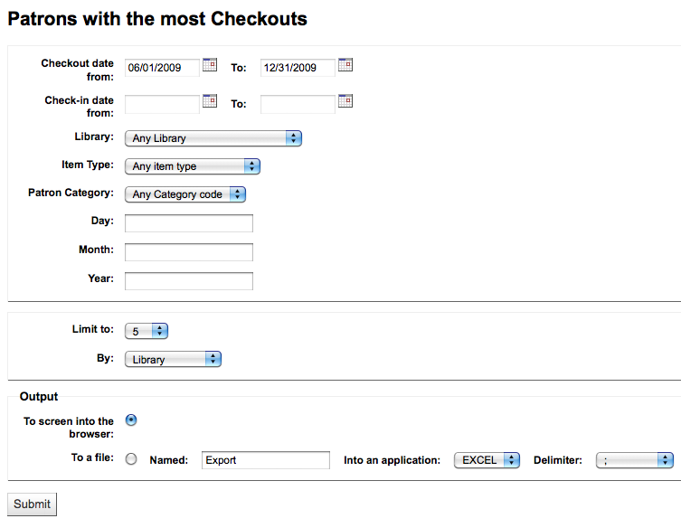
If you choose to output to the browser your results will print to the screen.
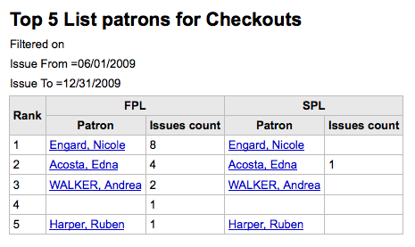
You can also choose to export to a file that you can manipulate to your needs.
Most circulated items
This report will simply list the items that have the been checked out the most.
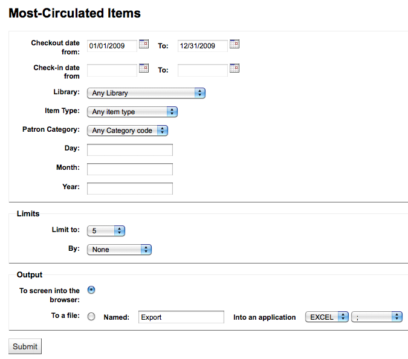
If you choose to output to the browser your results will print to the screen.
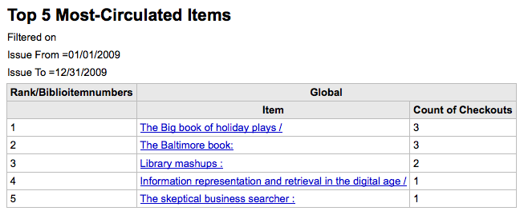
You can also choose to export to a file that you can manipulate to your needs.
Patrons with no checkouts
This report will list for you the patrons in your system who haven’t checked any items out.
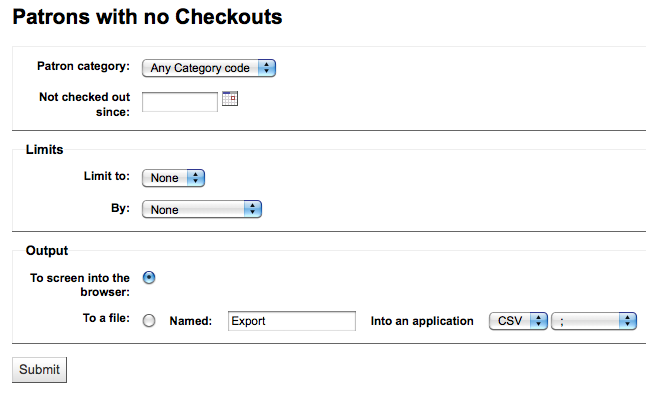
If you choose to output to the browser your results will print to the screen.
You can also choose to export to a file that you can manipulate to your needs.
Items with no checkouts
This report will list items in your collection that have never been checked out.
If you choose to output to the browser your results will print to the screen.
You can also choose to export to a file that you can manipulate to your needs.
Catalog by item type
This report will list the total number of items of each item type per branch.
If you choose to output to the browser your results will print to the screen.
You can also choose to export to a file that you can manipulate to your needs.
Lost items
This report will allow you to generate a list of items that have been marked as Lost within the system
Once you have chosen parameters, you will see the corresponding list of items.
Note
- You can customize the columns of this table in the ‘Table settings’ section of the Administration module (table id: lostitems-table).
Orders by fund
If you use the Acquisitions module, you will be able to see all the items that were ordered in each fund.
Once you choose the fund you wish to view, you can export the results or view them in the browser. If you choose to view them directly, you will be shown the list of orders.
Note
- You can customize the columns of this table in the ‘Table settings’ section of the Administration module (table id: funds-table).
Average loan time
This report will list the average time items are out on loan based on the criteria you enter:
If you choose to output to the browser your results will print to the screen.
You can also choose to export to a file that you can manipulate to your needs.
Report dictionary
The report dictionary is a way to pre-define common filters you’d like to apply to your reports. This is a good way to add in filters that the report wizard doesn’t include by default. To add a new definition, or filter, click ‘New definition’ on the reports dictionary page and follow the 4 step process.
Step 1: Name the definition and provide a description if necessary
Step 2: Choose the module that the will be queried.
Step 3: Choose columns to query from the tables presented.
Step 4: Choose the value(s) from the field(s). These will be automatically populated with options available in your database.
Confirm your selections to save the definition.
Your definitions will all appear on the Reports Dictionary page
Then when generating reports on the module you created the value for you will see an option to limit by the definition at the bottom of the usual filters.